淀粉或淀粉是一种聚合 碳水化合物，由众多葡萄糖单元通过糖苷键连接而成。大多数绿色植物都会产生这种多糖，用于储存能量。淀粉是世界范围内人类饮食中最常见的碳水化合物，在小麦、土豆、玉米、大米和木薯等主食中含量丰富。
|
|
|
| 标识符 | |
|---|---|
| 化学蜘蛛 |
|
| ECHA信息卡 | 100.029.696 |
| EC 编号 |
|
| RTECS 编号 |
|
| 大学 | |
|
CompTox 仪表盘 （EPA）
|
|
| 特性 | |
| （C 6哈 10哦 5) n |
|
| 摩尔质量 | 多变的 |
| 外貌 | 白色粉末 |
| 密度 | 变量[ 1 ] |
| 熔点 | 分解 |
| 不溶性（见淀粉糊化） | |
| 热化学 | |
| 每克 4.1788 千卡（17.484 kJ/g）[ 2 ]（高热值） | |
| 危害 | |
| 410 摄氏度（770 华氏度；683 开尔文） | |
| NIOSH（美国健康接触限值）： | |
|
PEL（允许值）
|
TWA 15 毫克/立方米(总量) TWA 5 毫克/立方米(分别) [ 3 ] |
| 安全数据表（SDS） | ICSC 1553 |
|
除非另有说明，数据均为材料在标准状态下（25 °C [77 °F]、100 kPa）的数据。
|
|
{kind=link}
{kind=link}

纯淀粉是白色、无味、无臭的粉末，不溶于冷水或酒精。它由两种分子组成：线性和螺旋状的直链 淀粉，以及支链淀粉。根据植物的不同，淀粉通常含有20%至25%（按重量计）的直链淀粉和75%至80%的支链淀粉。[ 4 ] 糖原是动物的能量储备，是支链淀粉的高度分支形式。
在工业生产中，淀粉通常会被转化为糖，例如通过麦芽加工。这些糖可以发酵生成乙醇，用于生产啤酒、威士忌和生物燃料。此外，由加工淀粉生产的糖也用于许多加工食品中。
大多数淀粉在温水中混合后会形成糊状物，例如小麦糊，可用作增稠剂、硬化剂或胶粘剂。淀粉的主要非食品工业用途是作为造纸工艺中的粘合剂。类似的糊状物，例如服装淀粉或洗衣淀粉，可以在熨烫前涂抹在某些纺织品上，使其变硬。
词源
编辑“淀粉”一词源于日耳曼语词根，意为“强壮的、坚硬的、加强的、变硬的”。[ 5 ]
现代德语Stärke（强度、淀粉）与之相关，指的是其主要历史应用，即在纺织中的用途：给织布上浆 纱线，给亚麻上浆。
表示淀粉的希腊语词amylon (ἄμυλον) 也与此相关，意为“未碾磨”。它衍生了词根amyl，用作多种与淀粉相关或源自淀粉的碳化合物的前缀（例如，戊醇、直链淀粉、支链淀粉）。
历史
编辑早在 3 万年前，欧洲的磨石中就发现了来自香蒲（香蒲、灯芯草）根茎的淀粉粒，这些淀粉粒可以作为面粉。 [ 6 ]在莫桑比克恩加卢地区，人们在距今 10 万年的洞穴中发现了高粱淀粉粒。 [ 7 ]
古埃及人使用纯提取的小麦淀粉糊，可能用来粘合纸莎草纸。[ 8 ]老普林尼在大约公元77-79 年所著的《自然史》中首次描述了淀粉的提取。[ 9 ]罗马人还将其用于化妆霜、头发扑粉和增稠酱汁。波斯人和印度人用它来制作类似于 gothumai 小麦哈尔瓦的菜肴。自公元 700 年以来，中国就开始使用大米淀粉作为纸张表面处理剂来造纸。[ 10 ]公元 8 世纪中叶，阿拉伯世界开始生产用小麦淀粉上浆的纸张。 [ 11 ]洗衣淀粉最早出现在 15 世纪初的英国，是 16 世纪制作皱领的必需品。[ 12 ]
植物的能量储存
编辑 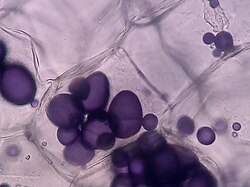
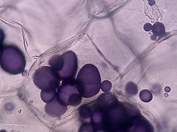
.jpg?_x_tr_sl=en&_x_tr_tl=zh-CN&_x_tr_hl=zh-CN&_x_tr_pto=wapp) 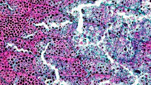
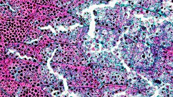
植物通过光合作用，将二氧化碳和水转化为葡萄糖。葡萄糖用于产生一般新陈代谢所需的化学能，也是核酸、脂质、蛋白质和纤维素等结构多糖等无数有机组成部分的前体。大多数绿色植物将多余的葡萄糖以淀粉的形式储存起来，淀粉被包装在半结晶的颗粒中，称为淀粉颗粒或造粉体。[ 13 ]在生长季节快结束时，淀粉会在靠近芽的树枝中积聚。果实、种子、根茎和块茎储存淀粉，为下一个生长季节做准备。幼苗依靠根、种子和果实中储存的能量生存，直到找到合适的土壤生长。[ 14 ]在夜间不进行光合作用时，淀粉也会被消耗。
绿藻和陆生植物将淀粉储存在质体中，而红藻、灰藻、隐藻、甲藻和寄生顶复藻则在细胞质或周质体中储存一种类似的多糖，称为弗罗里德淀粉。[ 15 ]
葡萄糖在水合状态下尤其会占据大量空间，并且具有渗透活性。而淀粉不溶，因此也具有渗透活性，可以更紧密地储存。半结晶颗粒通常由同心层状的直链淀粉和支链淀粉组成，这些淀粉可根据植物细胞的需求进行生物利用。[ 16 ]
直链淀粉由葡萄糖分子通过 α-1,4-糖苷键连接的长链构成。支链淀粉高度分支，但也由葡萄糖通过 α-1,6-糖苷键连接而成。动物多糖糖原中也发现了相同类型的连接。相比之下，许多结构多糖，如几丁质、纤维素和肽聚糖，则通过β-糖苷键连接，这种键更耐水解。[ 17 ]
淀粉颗粒的结构
编辑在植物体内，淀粉储存在半结晶颗粒中。每种植物的淀粉颗粒大小各不相同：大米淀粉相对较小（约 2 微米），马铃薯淀粉颗粒较大（可达 100 微米），而小麦和木薯则介于两者之间。[ 18 ]与其他植物淀粉来源不同，小麦淀粉的粒径呈双峰分布，大小颗粒均在 2 至 55 微米之间。[ 18 ]
一些栽培植物品种含有纯支链淀粉，不含直链淀粉，被称为蜡质淀粉。最常用的是蜡质玉米淀粉，其他还有糯米淀粉和蜡质马铃薯淀粉。蜡质淀粉的回生作用较小，因此糊状物更稳定。一种直链淀粉比例相对较高的玉米品种，即淀粉玉米，被种植用于利用其凝胶强度，并用作食品中的抗性淀粉（一种不易消化的淀粉）。
生物合成
编辑植物在两种组织中合成淀粉。第一种是储存组织，例如谷物胚乳，以及块根和茎，例如木薯和马铃薯。第二种是绿色组织，例如叶子，许多植物物种每天都会在叶子中合成暂时性淀粉。在这两种组织中，淀粉都是在质体（淀粉体和叶绿体）中合成的。
生化途径包括利用葡萄糖-1-磷酸腺苷转移酶将葡萄糖-1-磷酸转化为ADP-葡萄糖。此步骤需要以ATP形式存在的能量。然后，质体中的多种淀粉合成酶通过 α-1,4-糖苷键将 ADP-葡萄糖添加到不断增长的葡萄糖残基链上，从而释放出ADP。ADP-葡萄糖几乎肯定会添加到直链淀粉聚合物的非还原端，就像在糖原合成过程中 UDP-葡萄糖会添加到糖原的非还原端一样。[ 19 ]小的葡聚糖链进一步聚集形成淀粉颗粒的初始部分。
颗粒的生物合成和扩张是一个复杂的分子事件，可细分为四个主要步骤，即颗粒起始、小颗粒聚结、[ 20 ]相变和扩张。已鉴定出几种蛋白质参与了每个过程。例如，叶绿体膜相关蛋白 MFP1 决定了颗粒起始的位点。[ 21 ]另一种名为 PTST2 的蛋白质与小葡聚糖链结合并聚集以募集淀粉合酶 4 (SS4)。[ 22 ]另外三种蛋白质，即 PTST3、SS5 和 MRC，也已知参与淀粉颗粒起始过程。[ 23 ] [ 24 ] [ 25 ]此外，两种名为 ESV 和 LESV 的蛋白质在葡聚糖链的水相到结晶相变中发挥作用。[ 26 ]几种具有催化活性的淀粉合成酶，如 SS1、SS2、SS3 和 GBSS，对淀粉颗粒的生物合成至关重要，并在颗粒生物发生和扩张的每个步骤中发挥催化作用。[ 27 ]
除了上述蛋白质外，淀粉分支酶 (BE)会在葡萄糖链之间引入 α-1,6-糖苷键，从而形成支链淀粉。淀粉脱支酶 (DBE)异淀粉酶会去除部分支链淀粉。此类酶有多种同工酶，因此合成过程非常复杂。[ 28 ]
降解
编辑植物叶片在白天合成的淀粉是暂时性的：它在夜间作为能量来源。酶催化颗粒释放葡萄糖。不溶性、高度支化的淀粉链需要磷酸化才能被降解酶降解。葡聚糖水双激酶(GWD) 在葡萄糖的 C-6 位（靠近 1,6-α 分支键）上安装一个磷酸基。第二种酶，磷酸葡聚糖水双激酶(PWD)，在 C-3 位对葡萄糖分子进行磷酸化。第二次磷酸化之后，第一种降解酶，β-淀粉酶(BAM)，攻击葡萄糖链的非还原端。麦芽糖是释放的主要产物。如果葡萄糖链由三个或更少的分子组成，BAM 就无法释放麦芽糖。第二种酶，歧化酶-1 (DPE1)，将两个麦芽三糖分子结合。从这条链中，释放出一个葡萄糖分子。现在，BAM 可以从剩余的葡萄糖链中释放出另一个麦芽糖分子。此循环不断重复，直至淀粉完全降解。如果 BAM 接近葡萄糖链的磷酸化分支点，它就无法再释放麦芽糖。为了降解磷酸化的葡萄糖链，需要异淀粉酶 (ISA)。[ 29 ]
淀粉降解的产物主要是麦芽糖[ 30 ]和少量的葡萄糖。这些分子从质体运输到细胞质：麦芽糖通过麦芽糖转运蛋白运输，葡萄糖通过质体葡萄糖转运蛋白(pGlcT) 运输。[ 31 ]这两种糖用于蔗糖合成。随后，蔗糖可在线粒体中参与氧化戊糖磷酸途径，在夜间生成 ATP。[ 29 ]
淀粉工业
编辑


.jpg?_x_tr_sl=en&_x_tr_tl=zh-CN&_x_tr_hl=zh-CN&_x_tr_pto=wapp)
除了直接消费的淀粉植物外，2008 年还有 6600 万吨淀粉被用于工业加工。到 2011 年，产量已增至 7300 万吨。[ 32 ]
2011 年，欧盟淀粉工业产量约为 1100 万吨，其中约 40% 用于工业用途，60% 用于食品用途，[ 33 ]后者大部分为葡萄糖浆。[ 34 ] 2017 年，欧盟淀粉产量为 1100 万吨，其中 940 万吨在欧盟国内消费，又有 54% 用于淀粉甜味剂。[ 35 ]
美国在 2017 年生产了约 2750 万吨淀粉，其中约 820 万吨为高果糖浆，620 万吨为葡萄糖浆，250 万吨为淀粉制品。[需要澄清]其余淀粉用于生产乙醇（16 亿加仑）。[ 36 ] [ 37 ]
工业加工
编辑淀粉工业通过湿磨、清洗、筛分和干燥等工艺从农作物中提取和精制淀粉。目前，主要的商业精制淀粉包括玉米淀粉、木薯淀粉、竹芋淀粉[ 38 ]以及小麦、大米和马铃薯淀粉。红薯、西米和绿豆也是精制淀粉的来源，但比例较小。迄今为止，淀粉可以从50多种植物中提取。
粗淀粉在工业规模上加工成麦芽糊精、葡萄糖浆和果糖浆。这些大规模的转化由多种酶介导，这些酶将淀粉分解到不同程度。分解过程涉及水解，即通过加水断裂糖亚基之间的键。一些糖会发生异构化。该过程被描述为两个阶段：液化和糖化。液化将淀粉转化为糊精。淀粉酶是生产糊精的关键酶。糖化将糊精转化为麦芽糖和葡萄糖。在糖化的第二阶段，会使用多种酶，包括普鲁兰酶和其他淀粉酶。[ 39 ]

 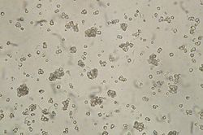
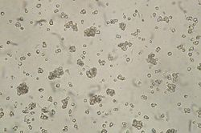
糊精化
编辑淀粉经受干热作用后会分解形成糊精，本文也称为“焦糊精”。这一分解过程称为糊精化。（焦）糊精主要呈黄色至棕色，糊精化是烤面包变褐的部分原因。[ 40 ]
食物
编辑.jpg?_x_tr_sl=en&_x_tr_tl=zh-CN&_x_tr_hl=zh-CN&_x_tr_pto=wapp) 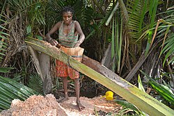
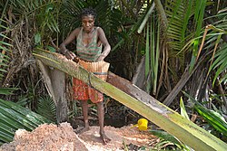
淀粉是人类饮食中最常见的碳水化合物，存在于许多主食中。世界各地淀粉摄入的主要来源是谷物（大米、小麦和玉米）和根茎类蔬菜（土豆和木薯）。[ 41 ]许多其他淀粉类食物也生长在地球上，有些只在特定的气候条件下生长，包括橡子、竹芋、阿拉卡查、香蕉、大麦、面包果、荞麦、美人蕉、芋头、杜鹃花、片栗、葛藤、玛兰加、小米、燕麦、酢浆草、波利尼西亚竹芋、西米、高粱、红薯、黑麦、芋头、栗子、荸荠和山药，以及多种豆类，如蚕豆、扁豆、绿豆、豌豆和鹰嘴豆。
在加工食品出现之前，人们食用大量未经烹煮和加工的含淀粉植物，这些植物中抗性淀粉含量很高。大肠内的微生物发酵或消耗淀粉，产生短链脂肪酸，这些脂肪酸被用作能量，并支持微生物的维持和生长。烹饪后，淀粉从不溶性、难以消化的颗粒转化为易于获取的葡萄糖链，具有截然不同的营养和功能特性。[ 42 ]
在当前的饮食中，高度加工的食物更容易消化，并在小肠中释放更多的葡萄糖——到达大肠的淀粉更少，身体吸收的能量更多。人们认为，这种能量输送的转变（由于食用更多加工食品）可能是导致现代生活中代谢紊乱（包括肥胖和糖尿病）发生的因素之一。[ 43 ]
直链淀粉/支链淀粉的比例、分子量和分子精细结构影响不同类型淀粉的理化性质和能量释放。[ 44 ]此外，烹饪和食品加工会显著影响淀粉的消化率和能量释放。根据消化特性，淀粉可分为快速消化淀粉、慢速消化淀粉和抗性淀粉。[ 45 ]生淀粉颗粒能够抵抗人体酶的消化，不会在小肠中分解成葡萄糖——它们会到达大肠，起到益生元 膳食纤维的作用。[ 46 ]当淀粉颗粒完全糊化并煮熟后，淀粉变得易于消化，并在小肠内快速释放葡萄糖。当淀粉类食物煮熟并冷却后，一些葡萄糖链会重新结晶，再次变得难以消化。慢速消化淀粉存在于生谷物中，在小肠中消化缓慢但相对完全。[ 47 ]广泛使用的含淀粉的预制食品有面包、煎饼、麦片、面条、意大利面、粥和玉米饼。
在高温烹饪过程中，淀粉释放的糖分会与氨基酸发生美拉德反应，形成晚期糖基化终产物(AGE)，赋予食物香气、风味和质感。[ 48 ]膳食 AGE 的一个例子是丙烯酰胺。最近的证据表明，膳食 AGE 的肠道发酵可能与胰岛素抵抗、动脉粥样硬化、糖尿病和其他炎症性疾病有关。[ 49 ] [ 50 ]这可能是由于 AGE 对肠道通透性的影响。[ 51 ]
蛋糕烘焙过程中，糖与淀粉争夺水分，会阻碍淀粉糊化，从而改善质地。
淀粉糖
编辑
.jpg?_x_tr_sl=en&_x_tr_tl=zh-CN&_x_tr_hl=zh-CN&_x_tr_pto=wapp)
淀粉可以通过酸、各种酶或两者的组合水解成更简单的碳水化合物。产生的碎片被称为糊精。转化程度通常用葡萄糖当量(DE) 来量化，该值大致等于淀粉中断裂的糖苷键的比例。
这些淀粉糖是迄今为止最常见的淀粉类食品成分，被用作许多饮料和食品的甜味剂。它们包括：
- 麦芽糊精，一种轻度水解（DE 10–20）淀粉产品，用作口味平淡的填充剂和增稠剂。
- 各种葡萄糖浆（DE 30–70），在美国也称为玉米糖浆，是一种粘稠溶液，用作多种加工食品的甜味剂和增稠剂。
- 葡萄糖（DE 100）是商业葡萄糖，由淀粉完全水解制备。
- 高果糖浆，是用葡萄糖异构酶处理葡萄糖溶液，直至大部分葡萄糖转化为果糖而制成的。在美国，高果糖玉米糖浆比糖便宜得多，是加工食品和饮料中使用的主要甜味剂。[ 52 ]果糖还具有更好的微生物稳定性。一种名为 HFCS-55 的高果糖玉米糖浆比蔗糖更甜，因为它含有更多的果糖，而 HFCS-42 的甜度与蔗糖相当。[ 53 ] [ 54 ]
- 糖醇，例如麦芽糖醇、赤藓糖醇、山梨糖醇、甘露醇和氢化淀粉水解物，是通过还原糖制成的甜味剂。
改性淀粉
编辑改性食品淀粉根据欧洲食品安全局的规定采用E 编码，根据食品法典的规定采用INS 编码，为食品添加剂：[ 55 ]
- 1400糊精
- 1401酸处理淀粉
- 1402碱处理淀粉
- 1403 漂白淀粉
- 1404氧化淀粉
- 1405 酶处理淀粉
- 1410磷酸单淀粉
- 1412磷酸双淀粉
- 1413磷酸化双淀粉磷酸酯
- 1414乙酰化双淀粉磷酸酯
- 1420乙酰化淀粉
- 1422乙酰化双淀粉己二酸酯
- 1440羟丙基淀粉
- 1442羟丙基二淀粉磷酸酯
- 1443 羟丙基双淀粉甘油
- 1450辛烯基琥珀酸淀粉钠
- 1451 乙酰化氧化淀粉
INS 1400、1401、1402、1403 和 1405 属于欧盟食品成分，没有 E 编号。[ 56 ]用于技术应用的典型改性淀粉包括阳离子淀粉、羟乙基淀粉、羧甲基化淀粉和硫醇化淀粉。[ 57 ]
用作食品添加剂
编辑作为食品加工添加剂，食用淀粉通常用作布丁、蛋奶冻、汤、酱汁、肉汁、馅饼馅料、沙拉酱等食品的增稠剂和稳定剂，也用于制作面条和意大利面。它们还可用作增稠剂、增量剂、乳化稳定剂，也是加工肉类的优质粘合剂。
软糖，例如糖豆和酒胶，并非使用传统意义上的模具制作。将托盘装满天然淀粉并抹平。然后将阳模压入淀粉中，留下约1000颗糖豆的印模。之后，将果冻混合物倒入印模中，并放入炉中凝固。这种方法大大减少了必须制作的模具数量。
抗性淀粉
编辑抗性淀粉是指在健康个体的小肠中不被消化的淀粉。来自小麦或玉米的高直链淀粉比其他类型的淀粉具有更高的糊化温度，并且通过烘焙、轻度挤压和其他食品加工技术保留了其抗性淀粉含量。它被用作加工食品中的不溶性膳食纤维，例如面包、意大利面、饼干、薄脆饼干、椒盐脆饼和其他低水分食品。它还因其健康益处而被用作膳食补充剂。已发表的研究表明，抗性淀粉有助于改善胰岛素敏感性[ 58 ] [ 59 ] ，降低促炎生物标志物白细胞介素 6和肿瘤坏死因子 α [ 60 ] [ 61 ]，并改善结肠功能标志物[ 62 ] 。有研究表明，抗性淀粉有助于完整全谷物的健康益处[ 63 ] 。
合成淀粉
编辑已证实一种无细胞化学酶促工艺可利用二氧化碳和氢气合成淀粉。该工艺通过计算路径设计绘制了包含11个核心反应的化学路径，将二氧化碳转化为淀粉的速率比玉米淀粉合成速率高约8.5倍。[ 64 ] [ 65 ]
非食品应用
编辑 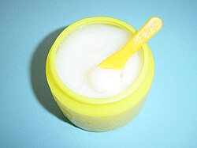
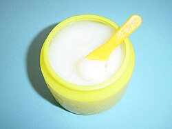
造纸
编辑造纸是全球最大的非食品淀粉应用领域，每年消耗数百万吨淀粉。[ 33 ]例如，在一张典型的复印纸中，淀粉含量可能高达8%。化学改性淀粉和未改性淀粉均用于造纸。在造纸工艺的湿部（通常称为“湿部”），使用的淀粉是阳离子，带正电荷与淀粉聚合物结合。这些淀粉衍生物与阴离子或带负电荷的纸纤维/纤维素和无机填料结合。阳离子淀粉与其他助留剂和内部施胶剂相结合，有助于赋予造纸工艺中形成的纸幅必要的强度（湿强度），并为最终的纸张提供强度（干强度）。
在造纸工艺的干燥阶段，纸幅会被淀粉基溶液再次润湿。这个过程被称为表面施胶。 所使用的淀粉在造纸厂或淀粉工业中经过化学或酶解聚（氧化淀粉）。施胶/淀粉溶液通过各种机械压榨机（施胶压榨）施加到纸幅上。表面淀粉与表面施胶剂一 起，赋予纸幅额外的强度，并提供保水性或“施胶”性能，从而获得卓越的印刷性能。淀粉也用于纸张涂料中，作为涂料配方的粘合剂之一，该配方包含颜料、粘合 剂和增稠剂的混合物。涂布纸的平滑度、硬度、白度和光泽度均有所提高，从而改善了印刷性能。
粘合剂
编辑瓦楞纸板粘合剂是全球第二大非食用淀粉应用领域。淀粉胶主要以未改性的天然淀粉为基础，并添加一些添加剂，例如硼砂和苛性钠。 部分淀粉经过糊化处理，用于承载未煮熟的淀粉浆液并防止沉淀。这种不透明的胶水被称为SteinHall胶水。这种胶水涂抹在瓦楞纸板的尖端。将瓦楞纸板 压在称为衬纸的纸张上。然后在高温下烘干，使胶水中剩余的未煮熟淀粉膨胀/糊化。这种糊化作用使胶水成为瓦楞纸板生产中快速而强力的粘合剂。
淀粉用于制造各种粘合剂或胶水[ 66 ] ，用于书籍装订、墙纸粘合剂、纸袋生产、管材缠绕、涂胶纸、信封粘合剂、学校胶水和瓶子标签。淀粉衍生物，例如黄糊精，可以通过添加一些化学物质进行改性，形成用于纸张的硬胶；其中一些方法使用硼砂或苏打灰，在50-70°C（122-158°F）的温度下与淀粉溶液混合，形成非常好的粘合剂。可以添加硅酸钠来增强这些配方。
淀粉在非食品领域的一个相关应用领域是建筑行业，其中淀粉用于石膏墙板的生产。将化学改性或未改性的淀粉添加到主要含有石膏的灰泥中。将上下两层厚纸板铺在石膏灰泥上，加热固化，最终形成坚硬的墙板。淀粉充当固化石膏与纸面之间的胶水，并为墙板提供刚性。
其他
编辑- 衣物淀粉或洗衣淀粉用于洗涤衣物。它在16至17世纪的欧洲被广泛使用。
- 淀粉制成的纺织化学品：经纱 上浆剂用于减少织造过程中纱线的断头。淀粉主要用于棉纱上浆。改性淀粉也用作纺织印花增稠剂。
- 在石油勘探中，淀粉用来调节钻井液的粘度，在石油开采中起润滑钻头和悬浮磨削残渣的作用。
- 淀粉还用于制造一些泡沫塑料和一些吊顶板。
- 在印刷行业中，食品级淀粉[ 67 ]用于制造防粘脏喷粉，这种喷粉用于分离印刷好的纸张，以避免湿墨被粘脏。
- 对于爽身粉，玉米淀粉粉可用作滑石粉的替代品，在其他健康和美容产品中也是如此。
- 淀粉可用于生产各种生物塑料，即可生物降解的合成聚合物。例如，以淀粉中的葡萄糖为基础的聚乳酸。
- 淀粉中的葡萄糖可以通过所谓的湿磨工艺进一步发酵成生物燃料 玉米乙醇。目前，大多数生物乙醇生产工厂采用干磨工艺，将玉米或其他原料直接发酵成乙醇。[ 68 ]
- 在制药工业中，淀粉也可用作赋形剂、片剂崩解剂和粘合剂。由纤维素制成的合成直链淀粉具有良好可控的聚合度。因此，它可以用作潜在的药物递送载体。[ 69 ]
化学测试
编辑 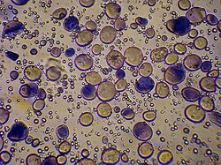
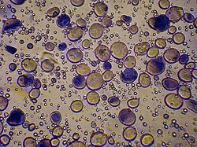
三碘化物(I 3 − )溶液（由碘和碘化钾混合而成）可用于检测淀粉。这种无色溶液在淀粉存在下会变成深蓝色。[ 70 ]所呈现蓝色的强度取决于直链淀粉的含量。不含或含有少量直链淀粉的蜡质淀粉会变成红色。本尼迪克特试验和费林试验也可用于检测淀粉的存在。
安全
编辑在美国，职业安全与健康管理局(OSHA) 已将工作场所淀粉暴露的法定限值（允许暴露限值）设定为八小时工作日内总暴露量为 15 毫克/立方米，呼吸道暴露量为 5 毫克/立方米。美国国家职业安全与健康研究所(NIOSH) 设定的建议暴露限值(REL) 为八小时工作日内总暴露量为 10 毫克/立方米，呼吸道暴露量为5 毫克/立方米。[ 71 ]
参见
编辑参考
编辑- ^ Whistler RL, BeMiller JN, Paschall EF (2012年12月2日)。淀粉：化学与技术。爱思唯尔科学出版社。第219页。ISBN 9780323139502。OCLC 819646427。 原件存档于 2022 年 5 月 14 日。检索日期：2022年5 月 13 日。
淀粉的密度因植物来源、先前处理和测量方法而异
- ^ CRC 化学和物理手册，第 49 版，1968-1969 年，第 D-188 页。
- ^ NIOSH 化学危害袖珍指南。“#0567”。美国国家职业安全与健康研究所(NIOSH)。
- ^ Brown WH, Poon T (2005).有机化学导论(第3版). Wiley出版社. 第604页. ISBN 978-0-471-44451-0。
- ^ 新简略牛津词典，牛津，1993年
- ^ Revedin A、Aranguren B、Becattini R、Longo L、Marconi E、Lippi MM、Skakun N、Sinitsyn A 等人（2010 年）。“三万年前植物性食物加工的证据” 。美国国家科学院院刊。107 ( 44) : 18815–9。Bibcode：2010PNAS..10718815R。doi：10.1073 / pnas.1006993107。PMC 2973873。PMID 20956317。
- ^ “10万年前人们就开始吃粥了”。《每日电讯报》。2009年12月18日。原著存档于2022年1月11日。
- ^ 老普林尼，《自然史》（普林尼），第 13 册，第 26 章，《用于造纸的糊状物》， 存档于 2022-05-14， Wayback Machine
- ^ 老普林尼，《自然史》（普林尼），第十三卷，第十七章， [1] 已存档， 2021-02-06， Wayback Machine
- ^ Hunter D (1947).造纸. DoverPublications. 第194页. ISBN
978-0-486-23619-3。
{{cite book}}：ISBN / 日期不兼容（帮助） - ^ Garlick K (1986)。“尺寸调整和尺寸调整实践历史简述”。书籍与纸张小组年鉴。第5卷。美国历史与艺术作品保护协会书籍与纸张小组。
- ^ “上浆织物的历史，洗衣淀粉：从中世纪的奢侈品到维多利亚时代的大众市场”。古老而有趣。2010年7月21日。检索日期： 2024年3月30日。
- ^ Zobel H (1988)。“从分子到颗粒：淀粉综合综述”。《淀粉- Stärke》。40 (2): 44–50。doi : 10.1002 /star.19880400203 。
- ^ Bailey E, Long W（1916 年1月14日- 1917年1月13日）。“论绿色水果中淀粉的含量”。堪萨斯科学院学报。28 ：153–155。doi：10.2307/3624346。JSTOR 3624346。
- ^ Dauvillée D, Deschamps P, Ral JP, Plancke C, Putaux JL, Devassine J, Durand-Terrasson A, Devin A, Ball SG (2009)。“模式甲藻Crypthecodinium cohnii胞质中floridean淀粉合成的遗传解剖” 。《美国国家科学院院刊》。106 ( 50 ): 21126–21130。Bibcode：2009PNAS..10621126D。doi：10.1073/ pnas.0907424106。PMC 2795531。PMID 19940244。
- ^ Blennow A , Engelsen SB (2010年2月10日)。“螺旋突发新闻：对抗细胞内结晶淀粉能量沉积”。植物科学趋势。15 ( 4): 236–40。Bibcode：2010TPS....15..236B。doi：10.1016 /j.tplants.2010.01.009。PMID 20149714。
- ^ Zeeman SC, Kossmann J, Smith AM (2010年6月2日)。“淀粉：其在植物中的代谢、进化和生物技术改造”。《植物生物学年鉴》。61 (1 ) : 209–234。Bibcode：2010AnRPB..61..209Z。doi ：10.1146/annurev-arplant - 042809-112301。PMID 20192737。
- ^ a b跳转至： Rosicka-Kaczmarek J、Kwasniewska-Karolak I、Nebesny E、Komisarczyk A (2018)。 “小麦淀粉的功能”。食品中的淀粉。英国达克斯福德：伍德海德出版社。 p。 331.国际标准书号 978-0-08-100868-3。原件存档于 2022 年 2 月 27 日。检索日期：2022 年 2 月 27 日。
- ^ Nelson, D. (2013) Lehninger 生物化学原理，第 6 版，WH Freeman and Company（第 819 页）
- ^ Bürgy L, Eicke S, Kopp C, Jenny C, Lu KJ, Escrig S, Meibom A, Zeeman SC (2021-11-26)。“拟南芥叶绿体亚域中淀粉颗粒首字母的聚结和定向各向异性生长” 。《自然通讯》。12 ( 1 ) : 6944。Bibcode ：2021NatCo..12.6944B。doi：10.1038/s41467-021-27151-5。ISSN 2041-1723。PMC 8626487。PMID 34836943。
- ^ Sharma M, Abt MR, Eicke S, Ilse TE, Liu C, Lucas MS, Pfister B, Zeeman SC (2024-01-16)。“ MFP1决定了淀粉颗粒起始的亚叶绿体位置”。美国国家科学院院刊。121 ( 3): e2309666121。Bibcode ：2024PNAS..12109666S。doi：10.1073/ pnas.2309666121。ISSN 0027-8424。PMC 10801857。PMID 38190535。
- ^ Seung D, Boudet J, Monroe J, Schreier TB, David LC, Abt M, Lu KJ, Zanella M, Zeeman SC (2017年7月)。“靶向淀粉的蛋白质同源物控制拟南芥叶片中淀粉颗粒的起始” 。植物细胞。29 ( 7 ) : 1657–1677。Bibcode：2017PlanC..29.1657S。doi：10.1105 / tpc.17.00222。ISSN 1040-4651。PMC 5559754。PMID 28684429。
- ^ Seung D, Schreier TB, Bürgy L, Eicke S , Zeeman SC (2018年7月)。“两种质体卷曲螺旋蛋白对拟南芥淀粉颗粒正常起始至关重要”。植物细胞。30 ( 7 ): 1523–1542。Bibcode：2018PlanC..30.1523S。doi：10.1105/tpc.18.00219。ISSN 1040-4651。PMC 6096604。PMID 29866647。
- ^ Vandromme C、Spriet C、Dauvillée D、Courseaux A、Putaux JL、Wychowski A、Krzewinski F、Facon M、D'Hulst C 和 Wattebled F（2019 年 1 月）。“ PII1：一种参与淀粉起始的蛋白质，决定拟南芥叶绿体中的颗粒数量和大小”。《新植物学家》。221 (1): 356–370。Bibcode ： 2019NewPh.221..356V。doi ： 10.1111 / nph.15356。ISSN 0028-646X。PMID 30055112。
- ^ Abt MR, Pfister B, Sharma M, Eicke S, Bürgy L, Neale I, Seung D, Zeeman SC (2020年8月)。“淀粉合成酶5，一种非典型淀粉合成酶样蛋白，促进拟南芥淀粉颗粒的起始” 。《植物细胞》。32 ( 8 ) : 2543–2565。Bibcode ： 2020PlanC..32.2543A。doi ： 10.1105 /tpc.19.00946。ISSN 1040-4651。PMC 7401018。PMID 32471861。
- ^ Liu C, Pfister B, Osman R, Ritter M, Heutinck A, Sharma M, Eicke S, Fischer-Stettler M, Seung D, Bompard C, Abt MR, Zeeman SC (2023-05-26)。“ LIKE EARLY STARVATION 1和EARLY STARVATION 1促进并稳定淀粉生物合成中的支链淀粉相变” 。《科学进展》。9 ( 21 ) : eadg7448。Bibcode ：2023SciA....9G7448L。doi：10.1126 /sciadv.adg7448。ISSN 2375-2548。PMC 10219597。PMID 37235646。
- ^ Pfister B, Zeeman SC (2016 年7月)。“植物细胞中淀粉的形成”。细胞和分子生命科学。73 (14): 2781–2807。doi : 10.1007/s00018-016-2250- x。ISSN 1420-682X。PMC 4919380。PMID 27166931。
- ^ Smith AM (2001 )。“淀粉颗粒的生物合成”。生物大分子。2 ( 2): 335–41。doi : 10.1021 / bm000133c。PMID 11749190 。
- ^ a b跳转至： Smith AM ，Zeeman SC，Smith SM（2005）。“淀粉降解” （PDF）。《植物生物学年鉴》。56 (1): 73–98。Bibcode ： 2005AnRPB..56 ...73S。doi：10.1146 /annurev.arplant.56.032604.144257。PMID 15862090。原著（PDF）存档于2015-04-12 。检索日期：2014-02-13。
- ^ Weise SE、Weber AP、Sharkey TD（2004 年）。 “麦芽糖是夜间叶绿体输出碳的主要形式” 。Planta。218 ( 3 ) : 474–82。Bibcode：2004Plant.218..474W。doi：10.1007 / s00425-003-1128 - y。PMID 14566561。S2CID 21921851 。
- ^ Weber A , Servaites JC, Geiger DR 等（2000 年 5 月）。 “一种假定的质体葡萄糖转运蛋白的鉴定、纯化和分子克隆” 。植物细胞。12 ( 5 ) : 787–802。Bibcode ： 2000PlanC..12..787W。doi ： 10.1105 / tpc.12.5.787。PMC 139927。PMID 10810150。
- ^ Starch Europe，AAF 竞争力立场，访问日期：2019 年 3 月 3 日。原件存档于 2019 年 3 月 6 日。检索日期：2019 年 3 月 3 日。
- ^ a b跳转至： “NNFCC 可再生化学品情况说明书：淀粉”。原件存档于 2021 年 3 月 13 日。检索日期：2011 年 5 月 25 日。
- ^ 丹麦国际淀粉研究所，淀粉产量， 2021 年 3 月 13 日 存档于Wayback Machine
- ^ “淀粉欧洲，工业，访问日期：2019年3月3日”。原件存档于2019年3月6日。检索日期：2019年3月3日。
- ^ CRA，2017 年行业概览，访问日期：2019 年 3 月 3 日(PDF) 。原件存档日期：2019 年 3 月 6 日。检索日期：2019 年 3 月 3 日。
- ^ Starch Europe，《欧盟-美国跨大西洋贸易与投资伙伴关系的最新立场》，访问于2019年3月3日。原件存档于2019年3月6日。检索日期：2019年3月3日。
- ^ Hemsley + Hemsley。“竹芋食谱”。BBC美食频道。原版存档于2017年8月3日。检索日期：2017年8月13日。
- ^ Van Der Maarel MJ、Van Der Veen B、Uitdehaag JC、Leemhuis H、Dijkhuizen L (2002)。“α-淀粉酶家族淀粉转化酶的特性和应用” (PDF)。生物技术杂志。94（2）：137-155。doi：10.1016/S0168-1656（01）00407-2。PMID 11796168。S2CID 32090939。
- ^ PhD JE (2013-11-18).聚合物化学导论：基于生物的方法. DEStech Publications, Inc. 第138页. ISBN 9781605950303。原件存档于 2022 年 5 月 14 日。检索日期：2022 年 1 月 3 日。
- ^ Anne-Charlotte Eliasson (2004)。食品中的淀粉：结构、功能和应用。WoodheadPublishing。ISBN 978-0-8493-2555-7 。
- ^ Liu J, Huang S, Chao C, Yu J, Copeland L, Wang S (2022)。“食品热加工过程中淀粉的变化：现状与未来方向”。食品科学与技术趋势。119：320–337。doi：10.1016/j.tifs.2021.12.011。S2CID 245211899。原著存档于2022年5月14日。检索日期：2022年2月27日。
- ^ Walter J, Ley R (2011 年10月)。“人类肠道微生物组：生态学和近期进化变化”。《微生物学年鉴》。65 (1 ) : 422–429。doi : 10.1146/annurev-micro-090110-102830。PMID 21682646。原著存档于2020年10月21日。检索日期：2020年10月13日。
- ^ Lindeboom N, Chang PR, Tyler RT (2004年4月1日)。“淀粉颗粒大小的分析、生化和物理化学方面，重点关注小颗粒淀粉：综述”。《淀粉- Stärke》。56 ( 3–4 ) : 89–99。doi : 10.1002/star.200300218 。
- ^ Englyst HN，Kingman S，Cummings JH（1992年10月）。“营养重要淀粉组分的 分类与测定”。《欧洲临床营养学杂志》。46 （增刊2）：S33-50。PMID 1330528。
- ^ Lockyer S , Nugent A (2017年1月5日)。“抗性淀粉的健康影响”。营养公报。42 (1): 10–41。doi : 10.1111 / nbu.12244。
- ^ Englyst H, Kingman S, Cummings J (1992年10月)。“营养重要淀粉组分的 分类与测定”。《欧洲临床营养学杂志》。46 （增刊2）：S33-50。PMID 1330528。
- ^ Ames JM (1998 年8月)。“美拉德反应在食品工业中的应用”。食品化学。62 (4): 431–439。doi : 10.1016 /S0308-8146(98)00078-8。原著存档于2022年2月27日。检索日期：2022年2月27日。
- ^ Kellow NJ，Coughlan MT（2015年11月）。“饮食来源的晚期糖基化终产物对炎症的影响”。营养评论。73 (11): 737–759。doi : 10.1093/nutrit/nuv030。PMID 26377870。原著存档于2022年2月27日。检索日期： 2022年2月27日。
- ^ Snelson M , Coughlan MT (2019年1月22日)。“膳食晚期糖基化终产物：消化、代谢和肠道微生物生态的调节”。营养素。11 ( 2): 215。doi : 10.3390/ nu11020215。PMC 6413015。PMID 30678161。
- ^ Snelson M, Lucut E, Coughlan MT (2022)。 “AGE-RAGE信号作为糖尿病肠道通透性调节剂的作用”。国际分子科学杂志。23 (3): 1766。doi : 10.3390 / ijms23031766。PMC 8836043。PMID 35163688 。
- ^ “饮料日报：‘糖的危害更大’：高果糖玉米糖浆价格飙升并未吓到可口可乐首席执行官”。2012年7月30日。原版存档于2013年3月30日。检索日期：2013年3月23日。
- ^ Ophardt, Charles. “甜味剂——导论”。埃尔姆赫斯特学院。原著存档于2010年9月23日。检索日期：2010年10月23日。
- ^ White JS (2008年12月2日)。“HFCS：多么甜蜜”。原版存档于2011年7月11日。 2010年10月23日检索。
- ^ 改性淀粉 存档于2018年3月29日，存档于Wayback Machine。《食品法典》FNP 52 Add 9 (2001) 出版。
- ^ “欧盟食品添加剂数据库，访问日期：2020年12月6日”。原件存档于2021年8月17日。检索日期：2020年12月6日。
- ^ Jelkmann M, Bonengel S, Menzel C, Markovic S, Bernkop-Schnürch A (2018)。“淀粉的新视角：新型硫醇化粘膜粘附衍生物的合成及体外评估” 。国际药学杂志。546 ( 1–2 ) : 70–77。doi : 10.1016 / j.ijpharm.2018.05.028。PMID 29758345。S2CID 44071363。
- ^ Rashed AA, Saparuddin F, Rathi DN, Nasir NN, Lokman EF (2022)。“抗性淀粉干预对糖尿病前期和糖尿病成人代谢生物标志物的影响” 。营养学前沿。8 : 793414。doi : 10.3389 / fnut.2021.793414。PMC 8790517。PMID 35096939。
- ^ Balentine D. “关于高直链玉米淀粉（含2型抗性淀粉）可降低2型糖尿病风险的健康声明决定的公告（案卷编号：FDA-2015-Q-2352）。美国食品药品监督管理局。美国政府。原件存档于2016年12月20日。 2016年12月19日检索。
- ^ Vahdat M, Hosseini SA, Khalatbari Mohseni G, Heshmati J, Rahimlou M (2020年4月15日)。“抗性淀粉干预对循环炎症生物标志物的影响：随机对照试验的系统评价与荟萃分析” 。营养学杂志。19 (1): 第33篇。doi : 10.1186/s12937-020-00548-6。PMC 7158011。PMID 32293469。
- ^ Lu J, Ma B, Qiu X, Sun Z, Xiong K (2021年12月30日)。“抗性淀粉补充剂对氧化应激和炎症生物标志物的影响：随机对照试验的系统评价和荟萃分析”。亚太临床营养杂志。30 (4): 614– 623。doi : 10.6133 /apjcn.202112_30(4) .0008。PMID 34967190。
- ^ Nugent AP (2005)。“抗性淀粉的健康特性”。营养公报。30 ：27–54。doi ：10.1111 / j.1467-3010.2005.00481.x 。
- ^ Higgins JA (2012)。 “全谷物、豆类及其后续膳食效应：对血糖控制和发酵作用的影响” 。营养与代谢杂志。2012 ：829238。doi ：10.1155/2012/ 829238。PMC 3205742。PMID 22132324。
- ^ “世界首例利用二氧化碳人工合成淀粉，效果超越自然”。新地图集。2021年9月28日。原版存档于2021年10月18日。检索日期：2021年10月18日。
- ^ Cai T, Sun H, Qiao J, Zhu L, Zhang F, Zhang J, Tang Z, Wei X, Yang J, Yuan Q, Wang W, Yang X, Chu H, Wang Q, You C, Ma H, Sun Y, Li Y, Li C, Jiang H, Wang Q, Ma Y (2021年9月24日)。“利用二氧化碳进行无细胞化学酶法合成淀粉” 。Science。373 ( 6562 ): 1523–1527。Bibcode：2021Sci...373.1523C。doi：10.1126 / science.abh4049。PMID 34554807。S2CID 237615280。
- ^ “粘淀粉：一种新型木材粘合剂”。美国农业部。2000年。原件存档于2010年4月13日。检索日期：2011年1月14日。
- ^ “喷雾粉”。拉塞尔-韦伯。原著存档于2007年8月9日。检索日期：2007年7月5日。
- ^ “美国乙醇联盟，乙醇设施”。原件存档于2011年6月25日。检索日期：2011年6月2日。
- ^ You C, Chen H, Myung S, Sathitsuksanoh N, Ma H, Zhang XZ, Li J, Zhang YH (2013年4月15日)。“非食品生物质酶促转化为淀粉”。美国国家科学院院刊。110 (18 ) : 7182–7187。Bibcode：2013PNAS..110.7182Y。doi：10.1073/ pnas.1302420110。PMC 3645547。PMID 23589840。
- ^ Madhu S, Evans HA, Doan-Nguyen VV, Labram JG, Wu G, Chabinyc ML, Seshadri R, Wudl F (2016年7月4日)。“吡咯苝-碘复合物中的无限多碘链：对淀粉-碘和苝-碘复合物的洞察” 。应用化学国际版。55 (28 ) : 8032–8035。doi : 10.1002/anie.201601585。PMID 27239781。
- ^ CDC – NIOSH 化学危害袖珍指南 – 淀粉。CDC.gov 。原版存档于 2015 年 9 月 24 日。检索日期：2015 年 11 月 21日。
外部链接
编辑- CDC - NIOSH 化学危害袖珍指南，为工人提供信息
- 关于淀粉的事实，为工人提供的信息